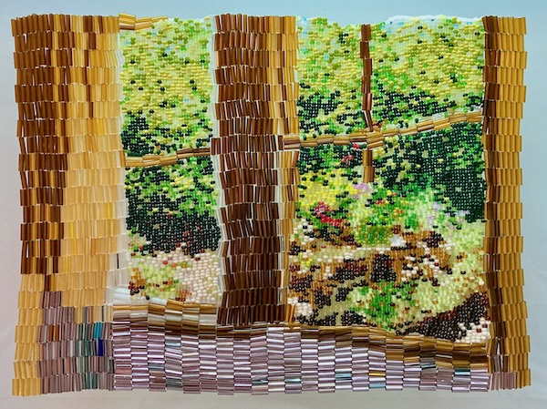
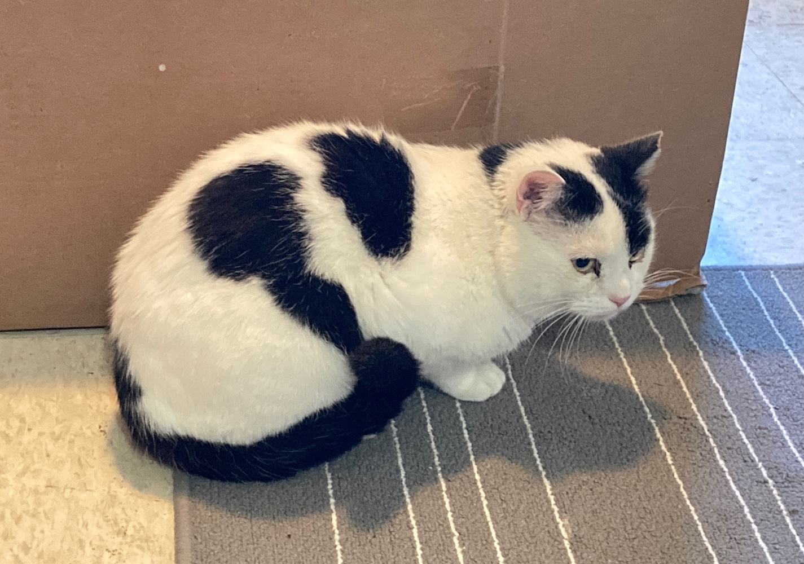
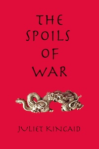
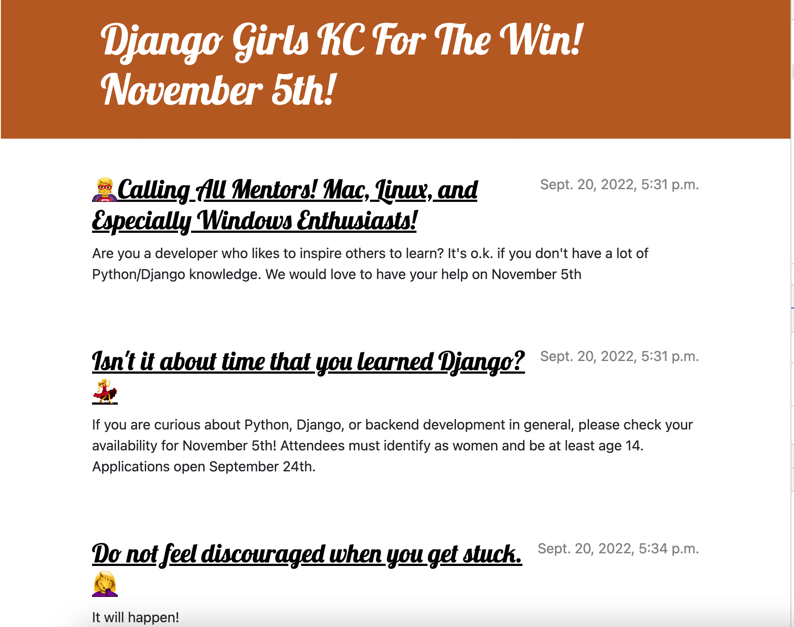

Fine Art Portfolio

I create meticulous beaded textiles.

I create meticulous beaded textiles.

Kitten Saga is a non-linear story created with Twine. Play the role of a kitten as you grow and experience the life of a domestic cat. Will the tale have a happy ending?

The Spoils of War, a Novel of the Ancient World A timeless tale of longing and of budding love, The Spoils of War, a Novel of the Ancient World, tells the story of a Greek warrior possessed by the spirit of a god and a Chinese maiden with tiny feet.
View the project here.
I collaborated with the Development, Design and Product teams to create a front end application for non-touch screens in Vue and Electron. The application features an image slider and API requests from DI's custom-built CMS. Two large screens display separate slideshows, permanently on view in Menorah Medical Center's Legacy Hall.
The Development Internship with Trivial was my first remote startup role. I contributed to a JavaScript action library to integrate actions into the codebase of a RESTful application.

Django Girls is a yearly event facilitated by Kansas City Women in Technology. My responsibilities as Mentor Director have included recruitment of mentors; planning and organization of the event; placement of mentors and attendees in small groups; and design of custom swag.